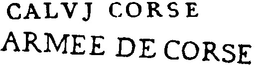
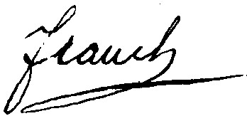
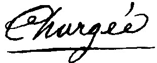

Le Postillon
 Accueil
Blog
Accueil
Blog
Accueil
Blog
Accueil
Blog
Bureau mis en service lors de l'annexion, en 1768
| Marque | N° | Port | Dimen. | Date | Coul. | Indice | Cote | ||||
|---|---|---|---|---|---|---|---|---|---|---|---|
| Pendant la période de la conquête il y eut un bureau militaire à Calvi lors de la troisième expédition, 1756-59. Ce bureau fit usage pour la première fois de la marque ARMEE de CORSE déjà cataloguée à Bastia. Voir aussi à Bastia, note sur la poste en Corse. | |||||||||||
| 1 | port dû | 46mm | 1768-1787 | noir | 21 | 600.00€ | |||||
|  | 2 | Armée de corse | (---) | 1768 | noir | 26 | 1 600.00€ | ||||
| Sachant d'une part, que la marque ARMEE DE CORSE était à cette époque la marque de départ du bureau de Bastia et, d'autre part que toute la correspondance de l'ile était dirigée sur ce dernier bureau, il y a tout lieu de penser que cette marque double, sur une lettre datée de Calvi, est accidentelle. | |||||||||||
|  | 3 | port payé | (---) | 1779 | manus | 20 | 500.00€ | ||||
|  | 4 | chargée | (---) | 1779 | manus | 20 | 500.00€ | ||||
lorem